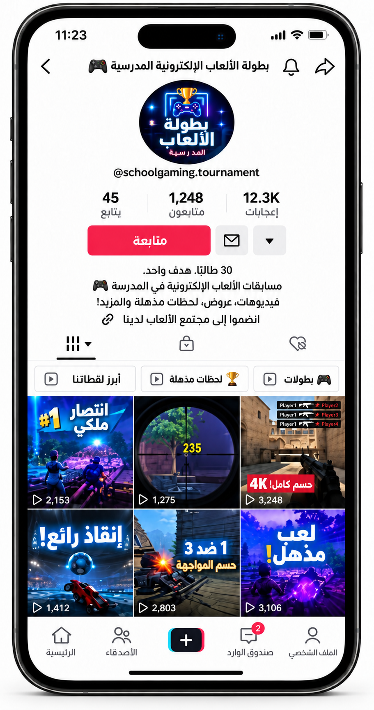
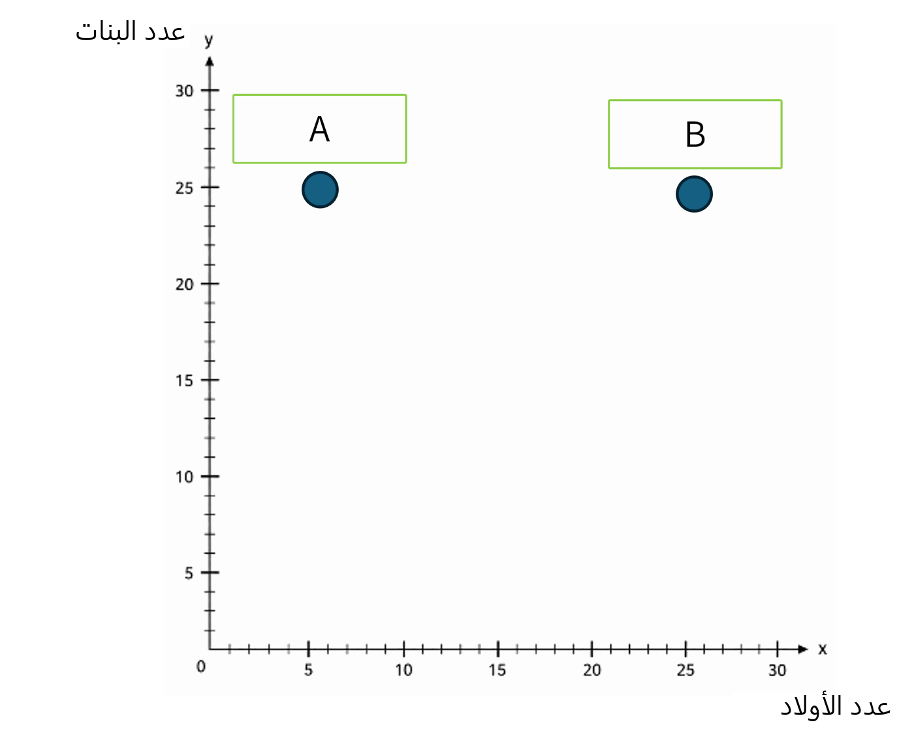
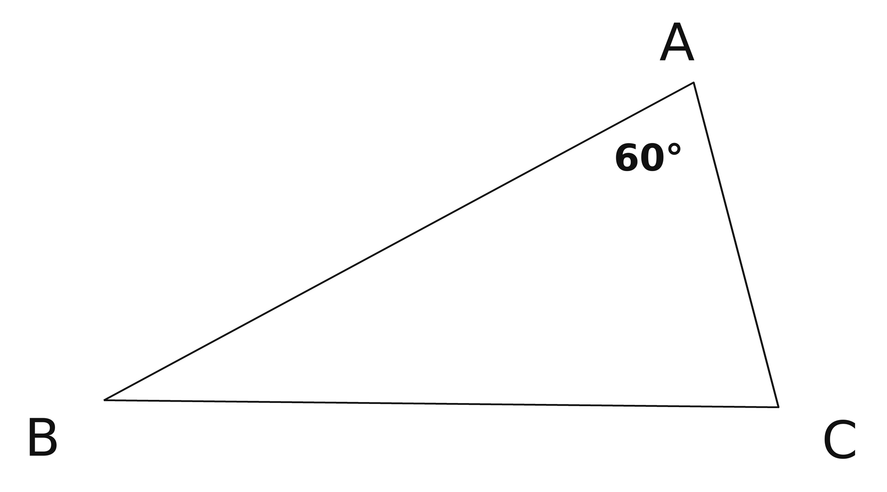

أنهينا مرحلة التعلّم، وسننتقل إلى التمارين ونجيب عن
4 أسئلة
يجب الإجابة بشكل صحيح عن سؤالين على الأقل.
1. في بطولة الألعاب الإلكترونية السنوية في المدرسة، أنشأت مجموعة مكوّنة من 30 طالبًا قناة مشتركة على الشبكة لرفع الفيديوهات من البطولة.
قسّم الطلاب العمل فيما بينهم إلى مهمتين فقط:
بعضهم لاعبون يصوّرون أنفسهم وهم يلعبون، وبعضهم محرّرو فيديو.
مقابل كل 3 محرّري فيديو يوجد 7 لاعبين.
أجيبوا عن الأسئلة التالية:

2. فتحت مجموعة من الطلاب بثًا مباشرًا على قناة بث.
في بداية البث، كان في الدردشة 30 مشاركًا.
النسبة بين عدد الأولاد وعدد البنات كانت 1:5.
خلال البث انضم إلى الدردشة أولاد فقط، وتغيرت النسبة بين الأولاد والبنات إلى 1:1.
أمامكم محور أعداد - محور X يمثل عدد الأولاد، ومحور Y يمثل عدد البنات.
أكملوا المعطيات بحسب الرسم البياني:


3. يخطط مكتب هندسة معمارية لمبنى عام جديد له سقف زجاجي على شكل مثلث.
حدّدت المهندسة المعمارية الرئيسية قاعدة بأن مقدار إحدى زوايا المثلث يجب أن يكون
يساوي 60° (∢BAC = 60°).
قررت المهندسات المعماريات أن تكون النسبة بين مقدارَيّ الزاويتين الأخريين في مثلث السقف 5 : 3 بالضبط
أ. اختاروا المقدار الدقيق للزاويتين الأخريين في المبنى المخطط:
ب. تفكر المهندسات المعماريات في تغيير الزاوية المعروفة (∢BAC = 60°)، مع إبقاء
النسبة بين الزاويتين الأخريين كما كانت - 3:5.
حدِّدوا لكلّ ادّعاء من الادّعاءات التالية ما إذا كان صحيحًا أو غير صحيح:
4. يقارن مدرب سباحة بين معطيات سَبّاحة وسَبّاح متميّزين خلال الموسم:
السبّاح أ (وسام): النسبة بين عدد الانتصارات وعدد السباقات التي شارك فيها هي 3:5.
السَبّاحة ب (عدن): النسبة بين عدد الانتصارات وعدد السباقات التي شاركت فيها هي 3:8.
أ. حقق وسام وعدن نفس عدد الانتصارات.
بدون إجراء حساب، من منهما شارك في عدد أكبر من السباقات خلال الموسم؟
ب. من فاز في عدد أكبر من السباقات هذا الموسم؟
على افتراض أن كليهما شاركا في نفس عدد السباقات.
ت. معلوم أن وسام فاز بـ 12 سباقًا خلال الموسم.
أكملوا: